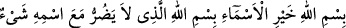

Bizi koru Rabbimiz cehennem azâbından
Tâbi olmanın en güzeli, îman etmek ve tevhid ehli olmaktır. Çünkü bütün
peygamberler bunda ittifak etmişlerdir. Mü’min, dünyada ve âhirette görünen ve
görünmeyen bütün düşmanlardan Allâh’ın koruması altındadır.
Abdullah b. Sekafî’nin şöyle dediği hikaye edilir: “Haccâc, bir gün Enes b. Malik’i
(r.a.) yanına çağırdı ve şöyle dedi:
“Seni en kötü bir ölümle öldürmek istiyorum.” Bunun üzerine Enes (r.a.):
“Eğer bunun senin elinde olduğunu bilseydim Allâh’a değil sana tapardım.” diye
cevap verdi.
Haccac: “Niçin böyle diyorsun?” diye sordu.
Enes (r.a.): “Çünkü, Rasûlullah (s.a.) bana bir duâ öğretti ve: “Kim her sabah bu
duâyı okursa, hiç kimse ona zarar veremez.”[90] buyurdu. Ben de bu sabah o duâyı
okudum.” dedi.
Haccac: “Onu bana öğret.” dedi.
Enes (r.a.): “Sen hayattayken onu bir kimseye öğretmekten Allâh’a sığınırım.” dedi.
Haccac adamlarına “Onu serbest bırakın.” dedi.
Enes (r.a.)’ı neden serbest bıraktığı sorulunca Haccac: “Onun omuzları üzerinde,
ağızlarını açmış kükreyen iki büyük aslan gördüm.” dedi.
Enes (r.a.), vefat edeceği zaman hizmetinde bulunan kimseye: “Hizmetinden dolayı
senin üzerimde hakkın var.” dedi ve bahsedilen duâyı ona öğretti. Ona şöyle dedi:
“De ki, isimlerin en hayırlısı olan Allâh’ın adıyla. Yerde ve gökte O’nun ismi ile
birlikte hiçbir şeyin zarar veremeyeceği Allâh’ın adıyla” Bahsedilenler bu duânın
dünyadaki faydalarıdır. Âhirette ise kişiyi ateşten ve azabdan korur.
Bil ki Mûsâ (a.s.), Fir’avn’a nasîhat etti. Ancak ona öğüt kâr etmedi. O, bir ulu
peygamberin ağzından dökülen nasihat incilerinin kıymetini bilmedi ve hakikatleri kabûl
etmedi. Neticede Fir’avn inkârcılık batağına saplandı. İnadla ve gururla takip ettiği
çıkmaz yol onu, boğulmaya ve helâke götürdü. Bu derekeye düşmekten, kullarını terbiye
eden Allâh’a sığınırız. Akıllı kişiye gereken de öğüt verenin öğüdüne kulak vermektir.
Hâfız der ki:
Mürşidlerin nasîhatinin kadrini bugün anladım